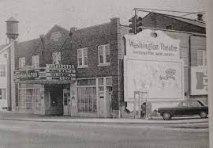
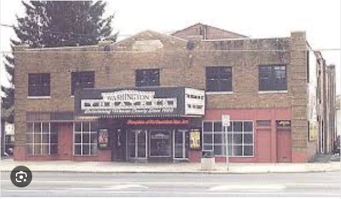

A Brief History...
The Washington Theatre was opened in 1926. It was built for both Silent Movies and Vaudeville. The theatre seated 800. It was proclaimed "The Showplace of Northwestern New Jersey." It was equipped with a Robert Morton 3 manual 2 ranks organ. Four years later it was modernized and wired with the addition of sound. Opened by the Lions Theatre Circuit, the Washington Theatre has had many owners.

In the 1970's the theatre was twinned. At this time much of its ornate style was covered over or destroyed. Over the years the Washington Theatre fell into a state of disrepair, and closed in 1997. It did not die however. It was briefly reopened by a local community group.

In 1998 the Washington Theatre was acquired by Galaxy Theatres. Extensive renovations were done to restore the lobby area back to its grandeur. Also extensive cleanups and repairs to the auditoriums was done. However, the Washington Theatre did not survive long again in operation, closing about 2001.
It was reopened in May 2006 but had closed by 2016. (Above copy and pictures of in business theatre pictures from internet.)